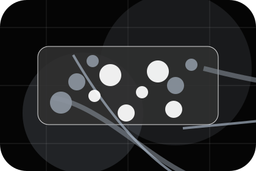
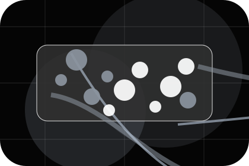
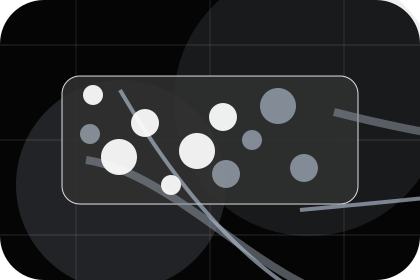
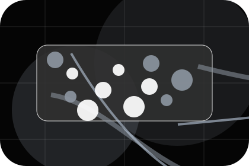
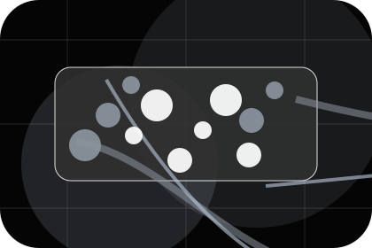
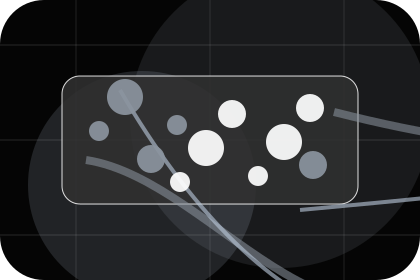
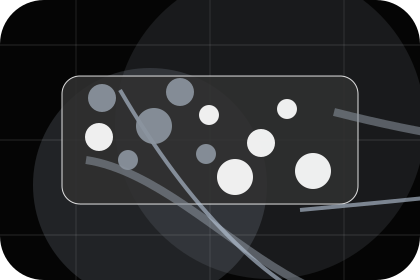
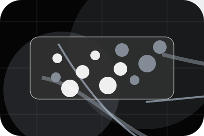
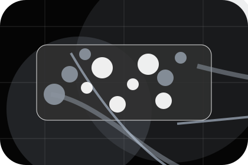
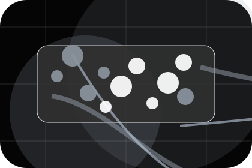

Network
Open the network route for mission, company, community so telecommunications, internet & connectivity visitors can compare context, proof, and next steps.
Open NetworkHome / 01
Home opens as a clear telecommunications decision hub: what Signal offers, who it helps, why it matters, and which route to take first.
The first screen combines positioning, proof, primary action, and fast internal navigation, so people can act immediately or compare the rest of the home route with context.
Black full-bleed coverage hero
Select the closest route and Signal keeps the next step, proof, and follow-up expectation aligned with availability and reliability.

Site atlas
This homepage is the working index for telecommunications, internet & connectivity: it explains the offer, points to every deeper page, and keeps the final action visible without making the visitor hunt.
A coverage-first telecom site with stark dark hero, satellite-map panels, speed proof, and direct address checking. The page links problem, promise, services, process, proof, questions, support, legal routes, and conversion paths into one clear decision map.
Open the network route for mission, company, community so telecommunications, internet & connectivity visitors can compare context, proof, and next steps.
Open NetworkOpen the plans route for residential, business, enterprise so telecommunications, internet & connectivity visitors can compare context, proof, and next steps.
Open PlansOpen the coverage route for areas, map, check so telecommunications, internet & connectivity visitors can compare context, proof, and next steps.
Open CoverageOpen the business route for internet, failover, static so telecommunications, internet & connectivity visitors can compare context, proof, and next steps.
Open BusinessOpen the install route for booking, equipment, visit so telecommunications, internet & connectivity visitors can compare context, proof, and next steps.
Open InstallOpen the support route for outages, billing, setup so telecommunications, internet & connectivity visitors can compare context, proof, and next steps.
Open SupportOpen the guides route for wifi, security, remote so telecommunications, internet & connectivity visitors can compare context, proof, and next steps.
Open GuidesOpen the questions route for speeds, contracts, routers so telecommunications, internet & connectivity visitors can compare context, proof, and next steps.
Open QuestionsOpen the contact route for sales, help, billing so telecommunications, internet & connectivity visitors can compare context, proof, and next steps.
Open ContactReview the local assets, icons, OG images, and static handoff materials used by Signal.
Open Asset SystemUse the full sitemap to recover any route and verify the whole Signal structure.
Open SitemapRead the privacy route before sending personal details through the static form.
Open PrivacyManage consent and understand the privacy-safe analytics approach.
Open CookiesHome / 02
Connectivity adds professional context to the home route, using the space coverage landing structure to support availability and reliability before visitors choose a next step.
Signal uses satellite coverage cards and focused copy to make the decision easier to scan, aligning the section with availability and reliability rather than filling space.
Open Network

Connectivity gives the page a specific angle instead of repeating the navigation label.
Home / 03
Speed shows what changes after the work: clearer decisions, visible progress, and proof points that connect the offer to real outcomes.
The layout connects before-and-after thinking with measured outcomes, making the result easy to scan without promising what the business cannot guarantee.
Open PlansThe uncertainty, delay, or missed opportunity visitors bring into speed.

The clearer, safer, or more valuable state Signal is designed to support.

The visible cue that connects speed to a believable decision, not a loose claim.
Home / 04
Coverage defines the better state Signal is built to create, with enough detail to make the promise believable.
A coverage-first telecom site with stark dark hero, satellite-map panels, speed proof, and direct address checking. The section grounds that direction in concrete benefits, visible tradeoffs, and a next route visitors can use when the promise feels relevant.
Open CoverageCoverage defines what becomes clearer, easier, or safer when Signal is the chosen route.
The benefit is tied to availability and reliability, not a vague quality claim.
Visitors get a linked path to compare the promise against services, standards, or examples.
Black full-bleed coverage hero
Select the closest route and Signal keeps the next step, proof, and follow-up expectation aligned with availability and reliability.
Home / 05
Plans makes commercial comparison easier by showing fit, scope, and terms before telecommunications visitors ask for the next step.
The layout keeps price-sensitive decisions honest: it separates starting scope, fuller delivery, and ongoing support so the visitor can ask a sharper question.
View PricingWho the offer is for, which scope it suits, and when a different route may be better.

What is included clearly enough for telecommunications, internet & connectivity visitors to compare value without hidden jargon.

The practical details that should be confirmed before someone asks to check coverage.
Who the offer is for, which scope it suits, and when a different route may be better.
ScopedWhat is included clearly enough for telecommunications, internet & connectivity visitors to compare value without hidden jargon.
QuotedThe practical details that should be confirmed before someone asks to check coverage.
RetainerHome / 06
Business adds professional context to the home route, using the space coverage landing structure to support availability and reliability before visitors choose a next step.
Signal uses satellite coverage cards and focused copy to make the decision easier to scan, aligning the section with availability and reliability rather than filling space.
Open InstallBusiness gives the page a specific angle instead of repeating the navigation label.
The satellite coverage cards show what to compare, what to avoid, and what matters most for telecommunications, internet & connectivity visitors.
The final cue points to a useful internal route so the section keeps the journey moving.
Home / 07
Reliability shows what changes after the work: clearer decisions, visible progress, and proof points that connect the offer to real outcomes.
The layout connects before-and-after thinking with measured outcomes, making the result easy to scan without promising what the business cannot guarantee.
Open Support
The uncertainty, delay, or missed opportunity visitors bring into reliability.
Home / 08
Reviews converts customer proof into a useful buying signal: the problem, the experience, and what changed afterward.
Proof stays believable by focusing on situation, service experience, and practical change rather than vague praise or unsupported results.
Open GuidesWhat the visitor needed before choosing Signal, written with enough context to feel real.

How the service, product, or support felt during the process, not just that it was good.

What became easier to decide, complete, buy, book, or trust after the interaction.
Home / 09
Questions handles buying doubts directly so visitors can understand timing, fit, limits, and the safest next step.
Answers are short by design: enough to remove hesitation, not so much that the page turns into documentation before the visitor can act.
Open ContactQuestions gives the page a specific angle instead of repeating the navigation label.
The satellite coverage cards show what to compare, what to avoid, and what matters most for telecommunications, internet & connectivity visitors.

The final cue points to a useful internal route so the section keeps the journey moving.
Signal starts with a focused intake so the recommendation matches the visitor's context, risk, timing, and readiness.
Each route explains inclusions, exclusions, documents, timing, and the decision points that affect final delivery.
The theme uses space coverage landing, satellite coverage cards, and coverage checker mockup, plan filter, outage alert panel rather than a shared template rhythm.
Black full-bleed coverage hero
Select the closest route and Signal keeps the next step, proof, and follow-up expectation aligned with availability and reliability.
Information is provided for planning and should be reviewed for the final client, location, and operating rules.
Home / 10
Signal closes the home route with a clear action, a quick reminder of the value, and a low-friction way to check coverage.
Visitors who are ready can use the primary action. Visitors who are still comparing can scan the section links, proof, and support routes before they check coverage.
Check CoverageThe final block keeps the choice simple: act now, compare one more proof route, or send enough detail for a focused response.
Check Coverageavailability and reliability
A coverage-first telecom site with stark dark hero, satellite-map panels, speed proof, and direct address checking. Home ends with a direct path to check coverage, plus enough context for visitors who still need to compare.
 Check Coverage
Check Coverage